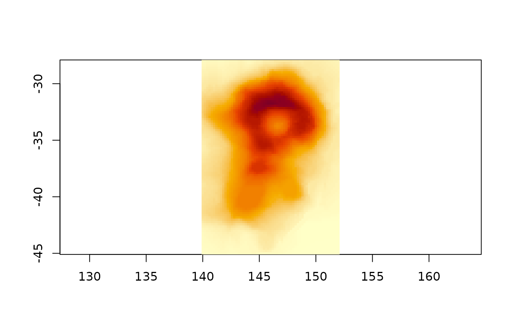
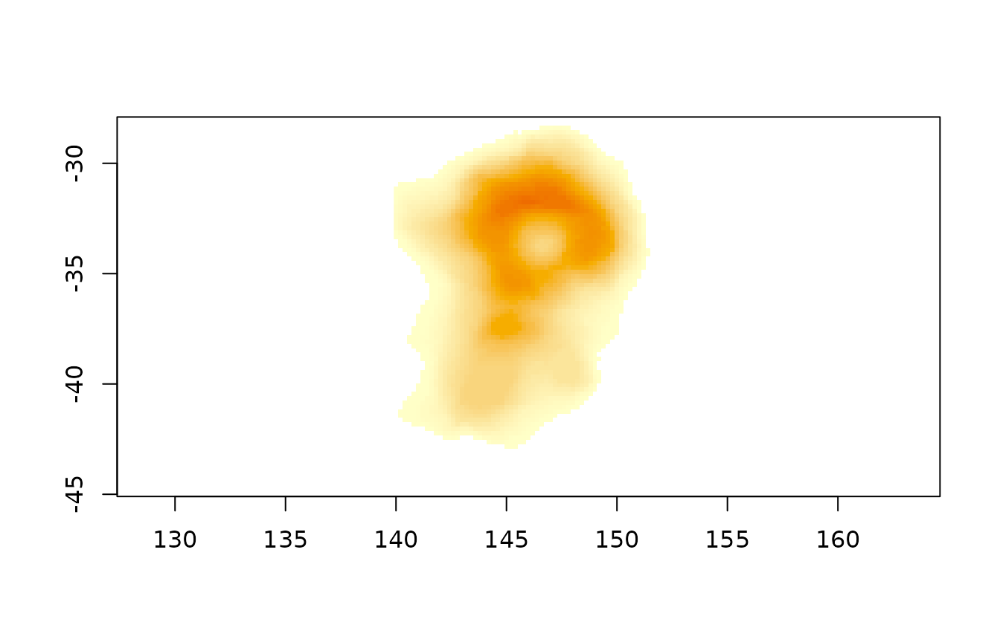
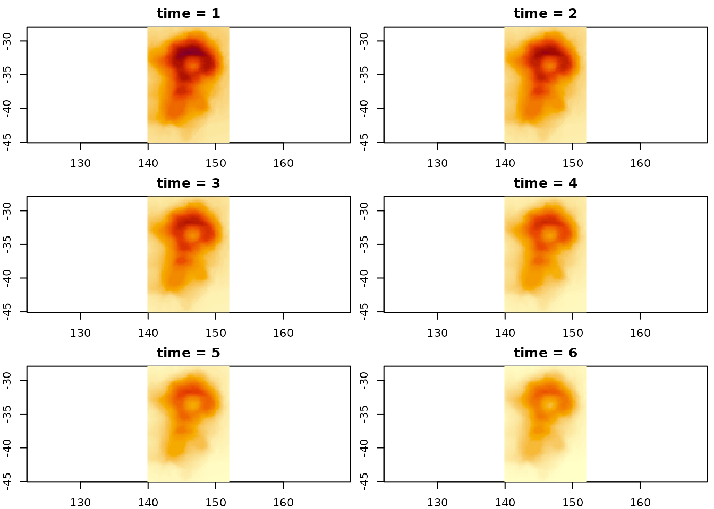
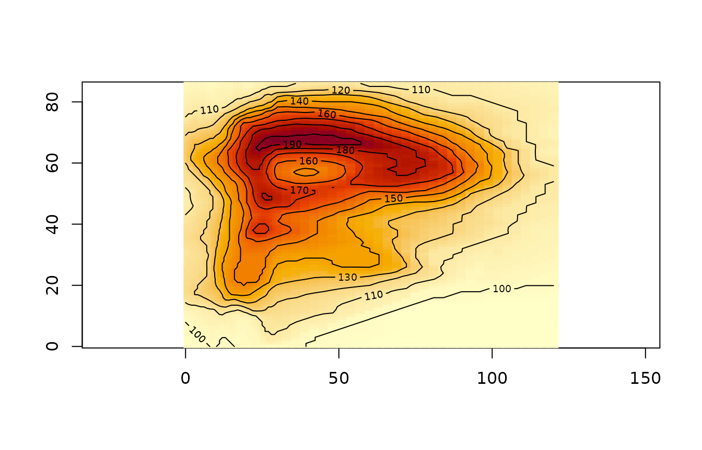
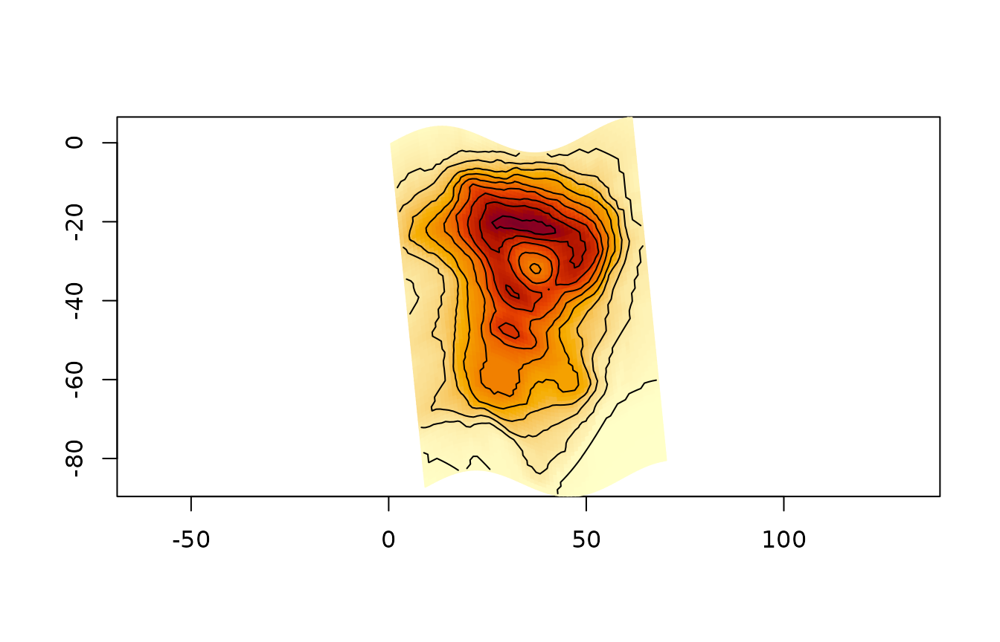
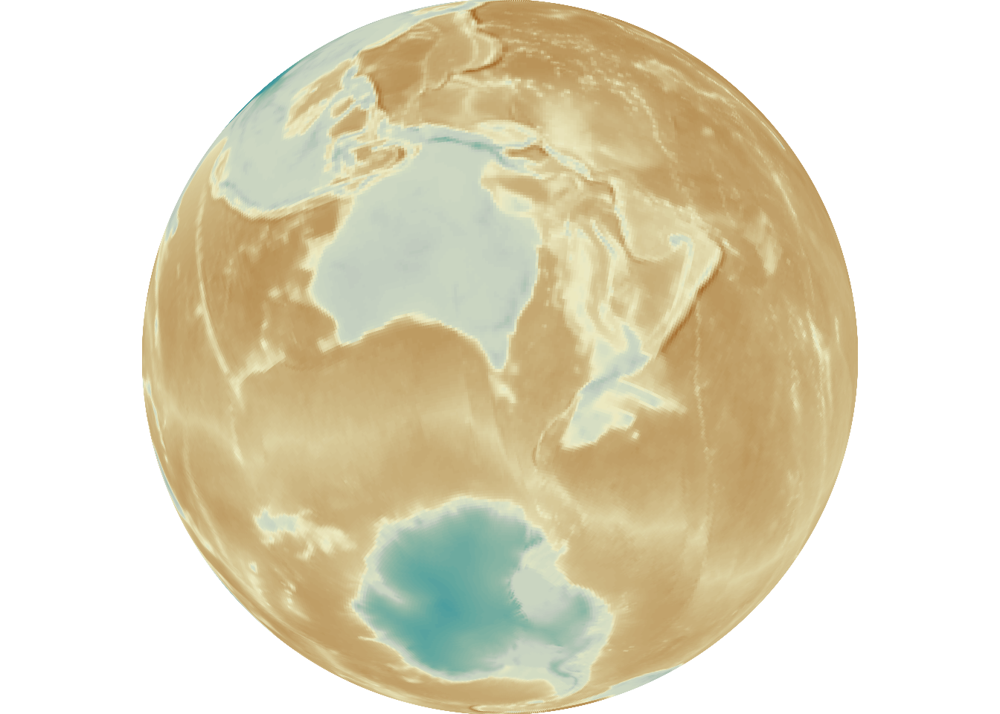

library(ximage)An image is two dimensions, but the data we read from Zarr, NetCDF and the GDAL multidimensional API usually has more: time, depth, band, ensemble member. And its coordinates aren’t always a tidy extent: latitude may run south to north, spacing may be irregular, or the grid may be curvilinear. This vignette covers how ximage draws those, and how it draws triangle and quad meshes with the same colour mapping.
Arrays: one slice at a time
Here is a small (lon, lat, time) array, in the layout
zaro::zaro_array() gives for a C-order Zarr array of shape
(time, lat, lon): the dimensions reversed, named through
dimnames. Its latitude runs south to north.
nlon <- 61; nlat <- 87; nt <- 6
lon <- seq(140, 152, length.out = nlon)
lat <- seq(-45, -28, length.out = nlat)
v <- t(volcano[nlat:1, ]) ## (lon, lat), stored south to north
a <- array(c(v, v * 0.96, v * 0.92, v * 0.88, v * 0.84, v * 0.8),
c(nlon, nlat, nt),
dimnames = list(lon = NULL, lat = NULL, time = NULL))
o <- ximage(a, coords = list(x = lon, y = lat), asp = 1)
#> array (lon: 61, lat: 87, time: 6)
#> drawing lon (x) by lat (y) at time = 1
#> other slices: slice = list(time = <1..6>)
The spatial dimensions were found by name, the first time step was
drawn north up (the rows were reversed because the latitudes increase),
and the message says how to draw the others. Use slice for
another time step and the returned zlim to keep the colours
comparable (values outside zlim are drawn as
na.col):
ximage(a, coords = list(x = lon, y = lat), slice = list(time = 6),
zlim = o$zlim, asp = 1)
xslices() lists the slices (reading only metadata, so it
is cheap for lazy arrays), and xpanels() draws several with
one colour scale:
head(xslices(a))
#> time
#> 1 1
#> 2 2
#> 3 3
#> 4 4
#> 5 5
#> 6 6
xpanels(a, coords = list(x = lon, y = lat), asp = 1)
Without dimension names the first two dimensions are rows and
columns, as for any R matrix. A third dimension of 2 to 4 is taken as
grey/alpha, RGB or RGBA, as it always has been, and anything more is
slices. Set the spatial dimensions with xy when the names
aren’t recognised, and select 3 or 4 indices along one dimension for a
colour composite, e.g. slice = list(band = c(4, 3, 2)).
Only the slice drawn is read, with [, so a lazy
zaro::zaro_array() (or any altarr array) fetches only the
chunks that slice needs.
GDAL multidimensional reads
gdalraster::mdim_read() returns a flat vector with a
gis attribute describing every dimension and its
coordinates. ximage uses those coordinates (here the latitudes run north
to south so no flip is needed), applies the scale and offset, and labels
the slice with its decoded time:
Coordinates
coords = list(x = , y = ) places the image by
coordinates instead of an extent. A vector with one value per cell gives
cell centres, one more value gives cell edges (as CF bounds variables
do). Regular spacing becomes an extent, irregular spacing is drawn cell
by cell:
x <- cumsum(c(0, rep(1, 30), rep(3, 30)))[1:61] ## spacing changes
y <- seq(0, 86)
ximage(volcano, coords = list(x = x, y = rev(y)), asp = 1)
xcontour(volcano, coords = list(x = x, y = rev(y)), add = TRUE)
Matrices give curvilinear coordinates, one per cell (centres) or one
more in each direction (corners). Cells are drawn as quads, and
xcontour() and xtext() follow them:
cx <- outer(1:87, 1:61, function(i, j) j + i / 10)
cy <- outer(1:87, 1:61, function(i, j) -i + j / 20 + sin(j / 8) * 4)
ximage(volcano, coords = list(x = cx, y = cy), asp = 1)
xcontour(volcano, coords = list(x = cx, y = cy), add = TRUE)
Because corners can be anything, they can be projected. Here the
corners of the global topo grid go through an orthographic
projection written in plain R; corners on the far side of the globe are
NA and their cells are dropped:
ortho <- function(lon, lat, lon0 = 147, lat0 = -42) {
rad <- pi / 180
lon <- lon * rad; lat <- lat * rad; lon0 <- lon0 * rad; lat0 <- lat0 * rad
cosc <- sin(lat0) * sin(lat) + cos(lat0) * cos(lat) * cos(lon - lon0)
x <- cos(lat) * sin(lon - lon0)
y <- cos(lat0) * sin(lat) - sin(lat0) * cos(lat) * cos(lon - lon0)
x[cosc < 0] <- NA
y[cosc < 0] <- NA
list(x = x, y = y)
}
nr <- nrow(topo); nc <- ncol(topo)
glon <- matrix(seq(-180, 180, length.out = nc + 1), nr + 1, nc + 1, byrow = TRUE)
glat <- matrix(seq(90, -90, length.out = nr + 1), nr + 1, nc + 1)
p <- ortho(glon, glat)
op <- par(mar = rep(0, 4))
ximage(topo, coords = list(x = matrix(p$x, nr + 1), y = matrix(p$y, nr + 1)),
asp = 1, axes = FALSE, col = hcl.colors(96, "Earth"))
par(op)Meshes
xmesh() draws triangle and quad meshes, filled by a
value on the vertices or the faces, with the colour arguments of
ximage(). It recognises triangulations from cdtr, RTriangle
and laridae, rgl ‘mesh3d’ objects (from quadmesh, anglr, textures) and
bare vertices with an index of faces.
## volcano's cells as a quad mesh
xy <- cbind(rep(0:61, each = 88), rep(87:0, 62))
i <- rep(seq_len(61), each = 87); j <- rep(seq_len(87), 61)
quads <- cbind((i - 1) * 88 + j, i * 88 + j, i * 88 + j + 1, (i - 1) * 88 + j + 1)
xmesh(xy, index = quads, value = as.vector(volcano), asp = 1)A constrained triangulation from cdtr, with a hole, filled by a value
at each vertex. The default “polygon” method gives each face the mean of
its vertices; method = "raster" locates every pixel of the
plot in the mesh and interpolates across its triangle, which is smooth
and costs pixels rather than faces:
ring <- function(r, n = 60) {
a <- seq(0, 2 * pi, length.out = n + 1)[-1]
cbind(cos(a), sin(a)) * r
}
pts <- rbind(ring(1), ring(0.4))
s0 <- c(1:60, 60 + 1:60)
s1 <- c(c(2:60, 1), 60 + c(2:60, 1))
tri <- cdtr::cdt_triangulate(pts[, 1], pts[, 2], s0 = s0, s1 = s1,
max_area = 0.003, erase = "holes")
z <- sin(tri$P[, 1] * 4) * cos(tri$P[, 2] * 4)
op <- par(mfrow = c(1, 2), mar = c(2, 2, 1, 1))
xmesh(tri, value = z, border = "grey30", asp = 1)
xmesh(tri, value = z, method = "raster", segments = TRUE, asp = 1)
par(op)Faces with a vertex that isn’t finite are dropped, so a projected
mesh can mark vertices that fail with NA, just as for the
projected image above.